Crosswalking the Dragons: figures
CAA 2026 proceedings paper on the Crossys (OCMDP, MaCHeCO, JNL), 13 figures with file names and working captions. Figs. 10 to 13 are not yet in the manuscript.
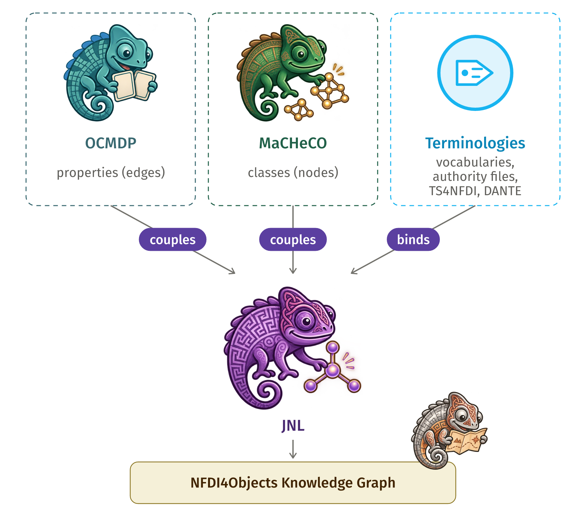
img/fig-architecture.pngThe three Crossys and the worlds they connect. OCMDP and MaCHeCO relate application metadata and application ontologies to reference models; the JNL couples both and binds terminologies; together they feed the NFDI4Objects Knowledge Graph.
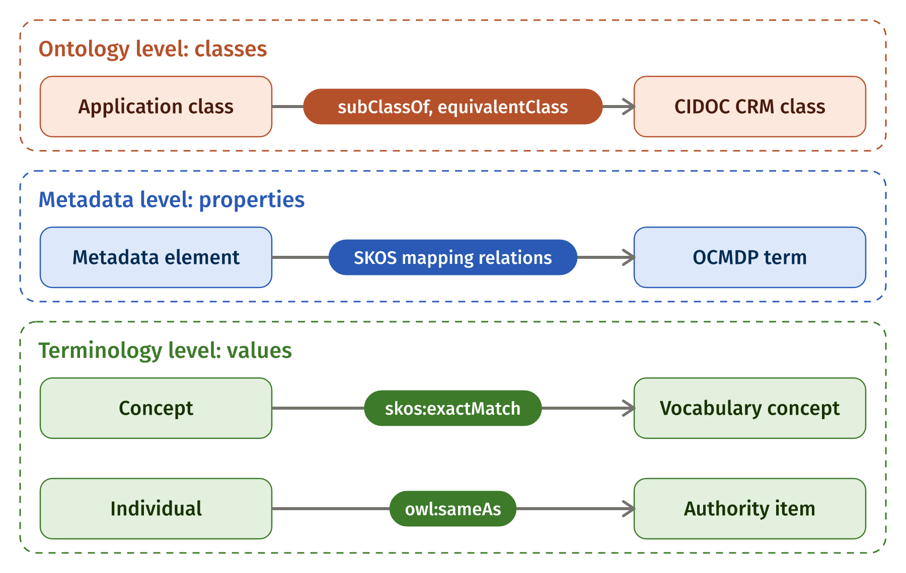
img/fig-correspondence.pngTypes of correspondence by level: subsumption for classes, graded SKOS relations for metadata, skos:exactMatch for concepts and owl:sameAs for individuals.
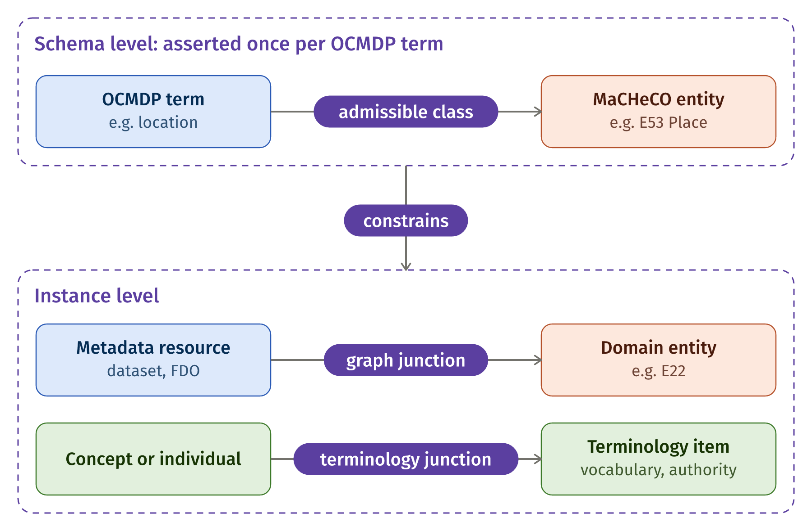
img/fig-jnl.pngThe Junction Node Layer. A schema-level junction constrains the object class of an OCMDP term; three instance-level junctions link metadata resources to domain entities and values to terminologies.
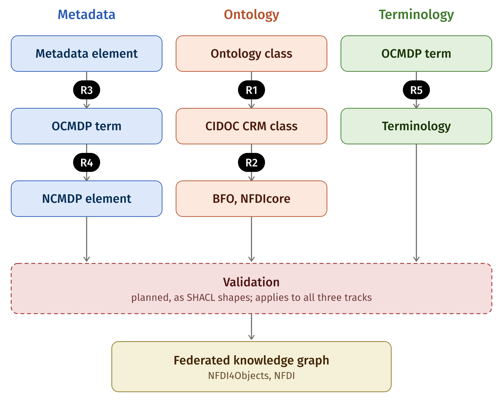
img/fig-rules.pngCrosswalk rules R1 to R5 as three tracks: metadata (R3, then R4), ontology (R1, then R2) and terminology binding (R5). All three lead to validation, which is planned as SHACL shapes, and to the target graph.
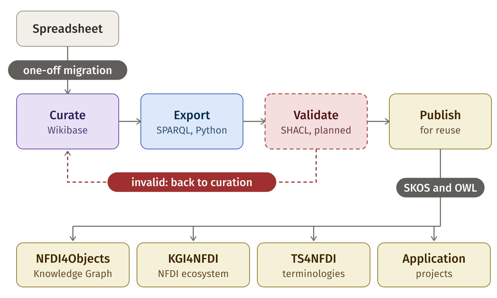
img/fig-pipeline.pngFrom curation to publication: community curation in the CrossyBase Wikibase, export by SPARQL and Python, SHACL validation and publication for reuse. Invalid output returns to curation. Dashed: planned.
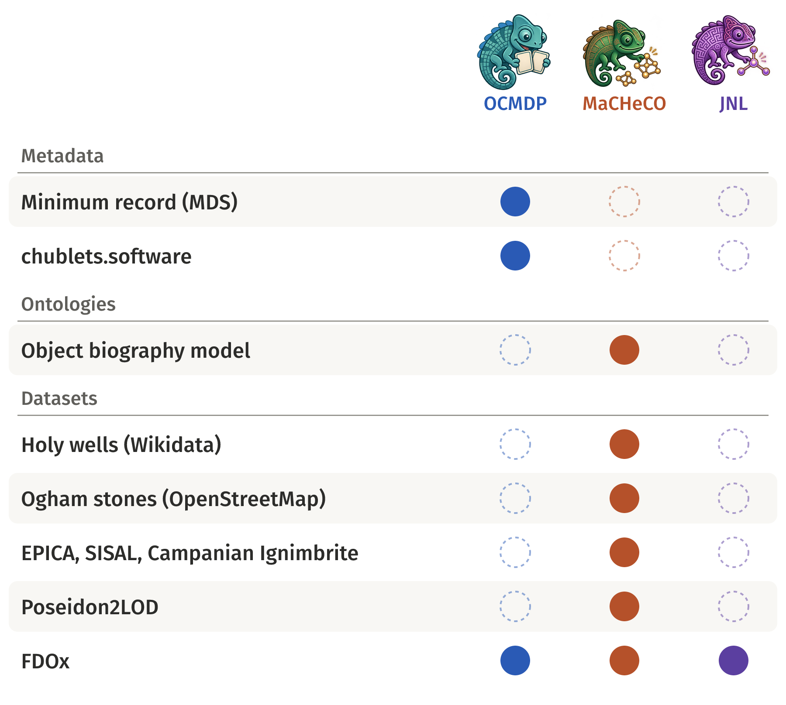
img/fig-projects.pngProjects and the Crossys they use, grouped by the section in which they appear; the last two rows are only listed. Filled: the project uses the Crossy; dashed: not used or not confirmed.
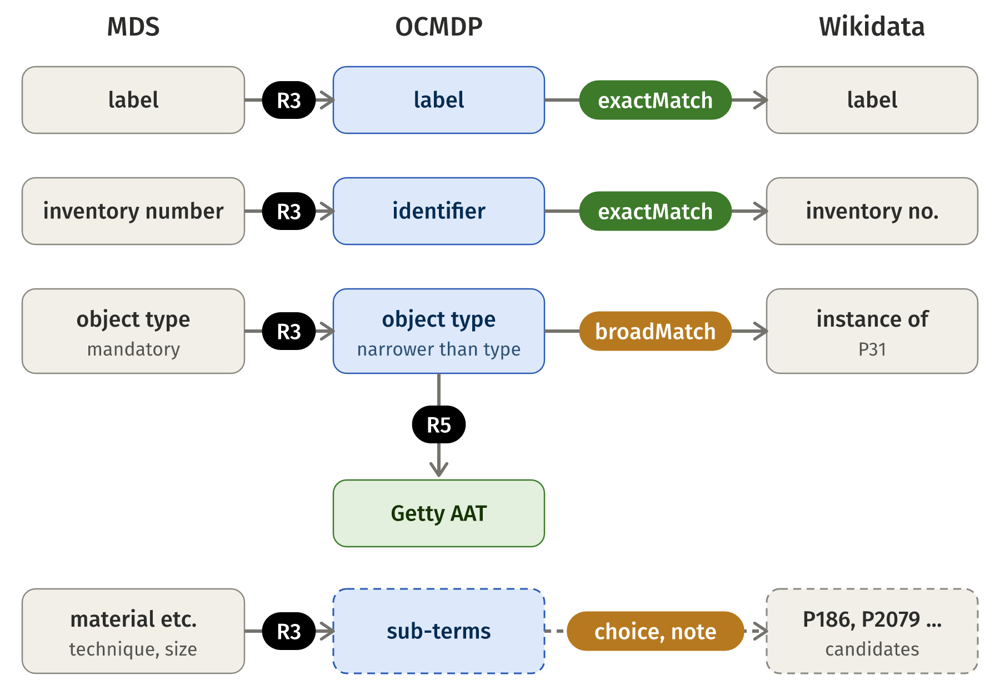
img/fig-mds.pngOCMDP example. Fields of the minimum record (MDS) map to OCMDP terms and from there to Wikidata. Label and inventory number match exactly, the object type only as a broad match, and for material, technique, dimensions and inscription the choice between candidate properties is recorded with a scope note. R3 and R5 refer to the crosswalk rules. Dashed: not yet confirmed.
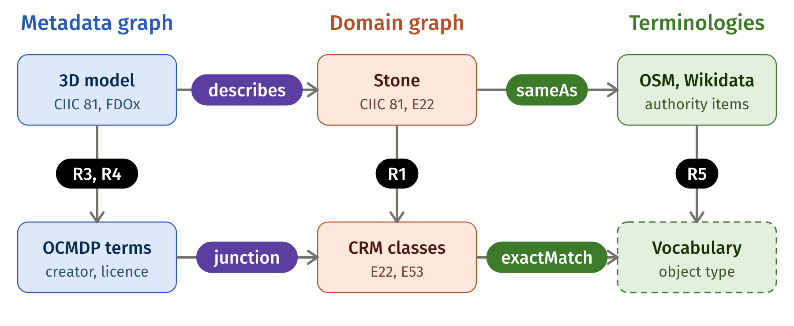
img/fig-ciic81.pngJNL example. The 3D model of the Ogham stone CIIC 81 is described in the metadata graph by OCMDP terms; the stone it depicts is described in the domain graph in CIDOC CRM. A graph junction links the two, and two terminology junctions bind the object type and the stone itself to vocabularies and authority files. R1 to R5 refer to the crosswalk rules. Dashed: not yet confirmed.
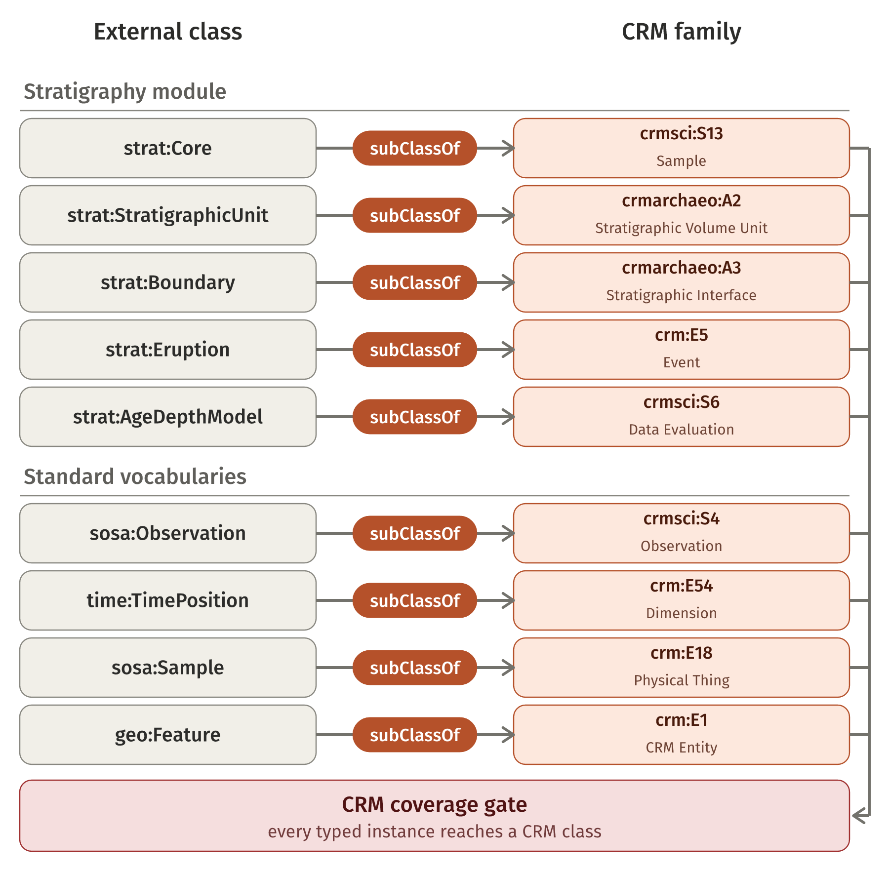
img/fig-geo.pngThe MaCHeCO pattern at the scale of a pipeline. Each external class that geo-lod instantiates is subsumed under one CIDOC CRM family class; a coverage gate checks that every typed instance reaches such a class.
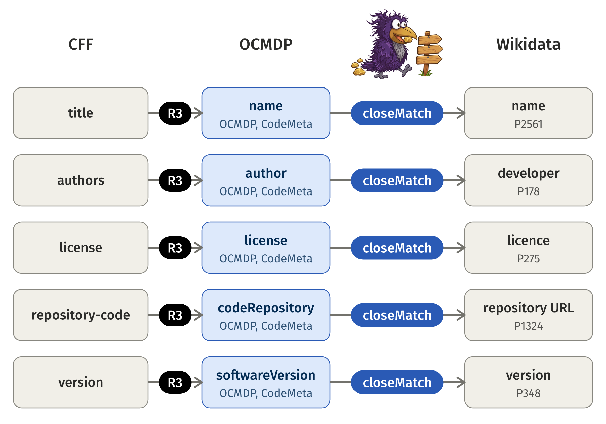
img/fig-chublets.pngOCMDP example, software metadata. Citation File Format fields map to OCMDP terms (CodeMeta names, provisional) and from there to Wikidata properties.
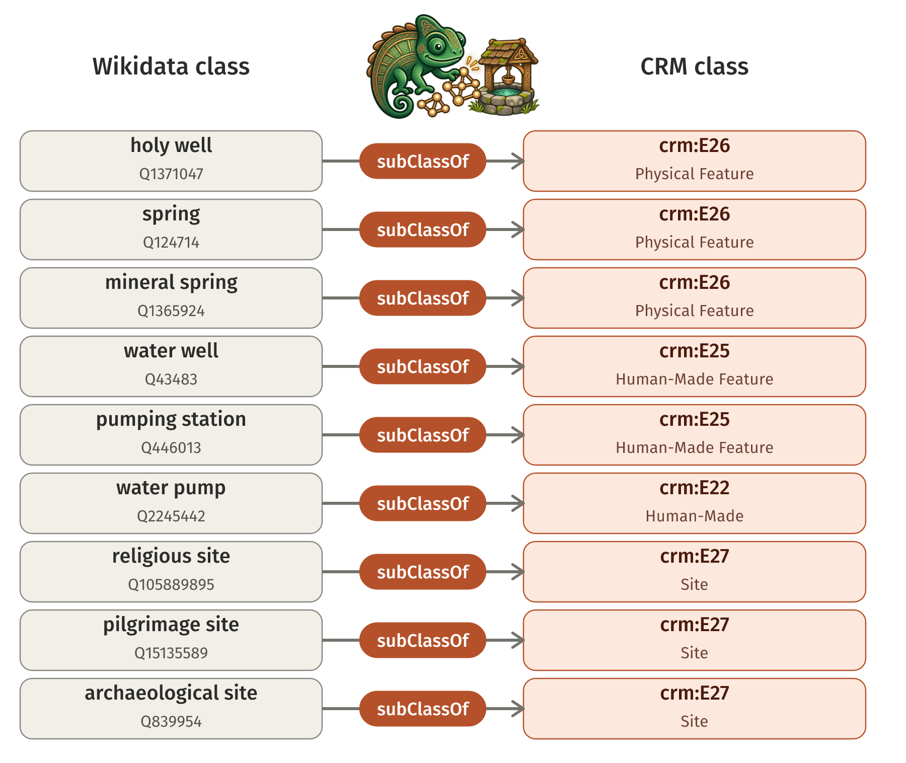
img/fig-holywells.pngMaCHeCO example. Wikidata classes of holy wells and related water and religious sites are subsumed under CIDOC CRM classes. Data: wd-holywells-static.
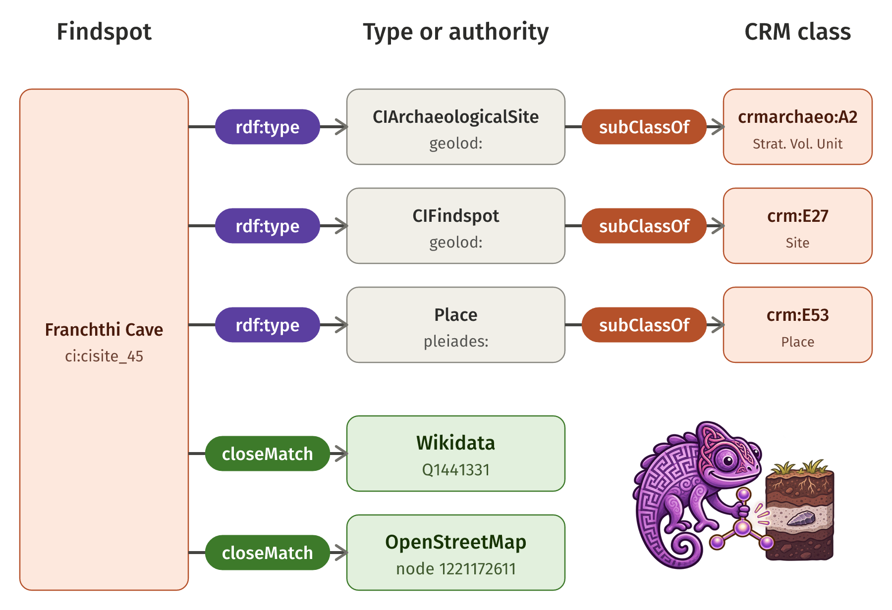
img/fig-ignimbrite.pngJNL example. The Campanian Ignimbrite findspot Franchthi Cave in geo-lod: its types are anchored in CIDOC CRM classes and its place is matched to Wikidata and OpenStreetMap. Data: geo-lod.
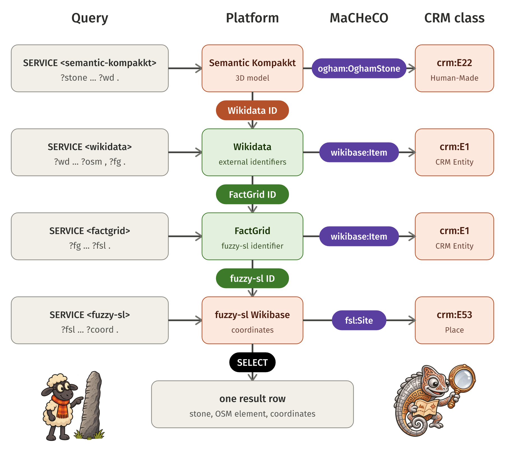
img/fig-federated.pngThe federated query of Federating the Dragons seen through the Crossys: each SERVICE block calls a platform, identifiers link the platforms, and MaCHeCO subsumes their classes under CIDOC CRM classes.